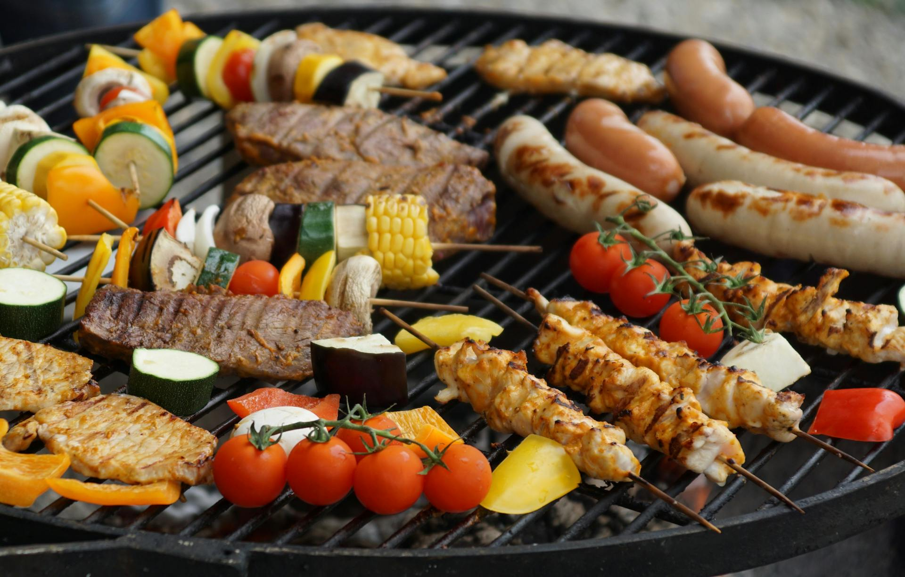

Grilled Sausages Recipe
Home

Description
This recipe is claimed to be the best ever! With over 153 reviews at an average of 4.5, it's not to be
undersold! So buckle up or roll in
this case and prepare for the greatest meal of your life!
It should take around 35 minutes, so stop working on TOP and get this tucker down your gullet!
Ingredients
- 8 sausages
- 2 tablespoons butter
- 2 medium onions, hakved and sliced
- 3 large apples - peeled, cored and cut into thin wedges
- 2 tablespoons appe cider or red wine vinegar
- 2 tablespoons brown sugar, packed
- Salt and pepper to taste
Steps
- Prepare an outdoor grill for high heat
- Poke sausages several times with a fork. Place in a large pot, cover with
water, and simmer over medium-high heat until cooked through, about 7 minutes.
Remove from heat and set aside.
- Warm butter in a large skillet over medium heat. Stir in onions and cook until soft and translucent.
Stir in apples, vinegar, and brown sugar; cook, stirring gently, until caramelized, 10 to 15 minutes. Season with salt and pepper
- Meanwhile, place boiled sausages on the preheated grill (or under the broiler) and cook until well browned.
Serve on a mound of caramelized apples and onions.